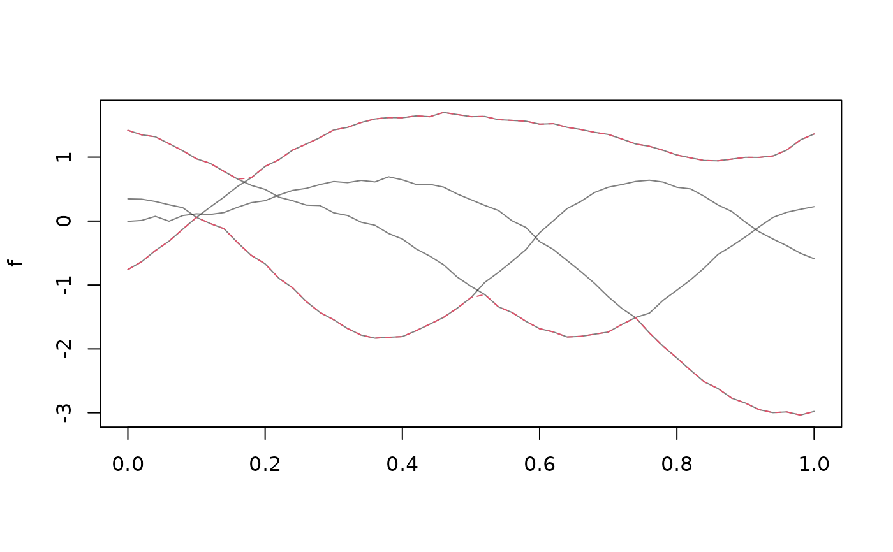
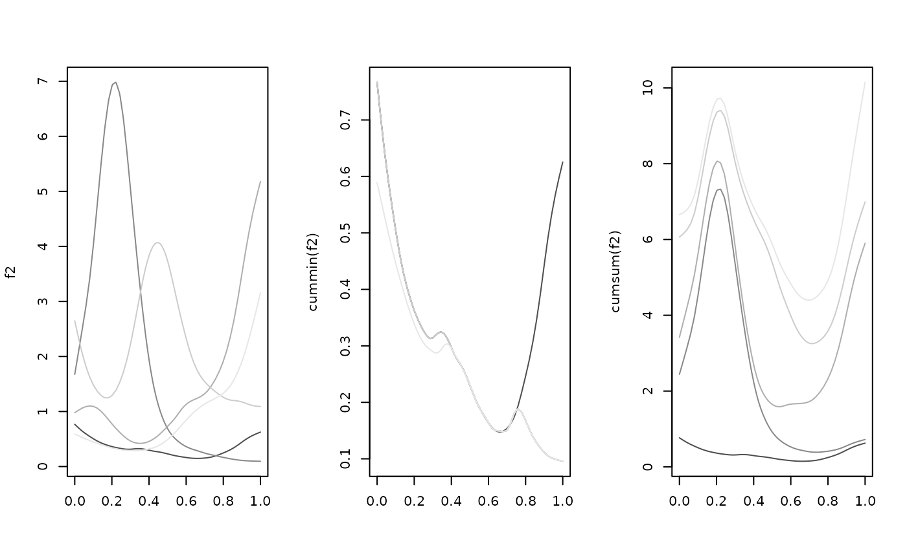

These methods and operators mostly work arg-value-wise on tf objects, see
vctrs::vec_arith() etc. for implementation details.
Usage
# S3 method for class 'tfd'
e1 == e2
# S3 method for class 'tfd'
e1 != e2
# S3 method for class 'tfb'
e1 == e2
# S3 method for class 'tfb'
e1 != e2
# S3 method for class 'tfd'
vec_arith(op, x, y, ...)
# S3 method for class 'tfb'
vec_arith(op, x, y, ...)
# S3 method for class 'tfd'
Math(x, ...)
# S3 method for class 'tfb'
Math(x, ...)
# S3 method for class 'tf'
Summary(...)
# S3 method for class 'tfd'
cummax(...)
# S3 method for class 'tfd'
cummin(...)
# S3 method for class 'tfd'
cumsum(...)
# S3 method for class 'tfd'
cumprod(...)
# S3 method for class 'tfb'
cummax(...)
# S3 method for class 'tfb'
cummin(...)
# S3 method for class 'tfb'
cumsum(...)
# S3 method for class 'tfb'
cumprod(...)Details
Operations on
tfd-objects do not extrapolate functions on a common grid first, they operate on the function at argument values that both objects have in common.With the exception of addition and multiplication, operations on
tfb-objects first evaluate the data on theirarg, perform computations on these evaluations and then convert back to antfb- object, so a loss of precision should be expected – especially so for small spline bases and/or very wiggly data.Equality checks of functional objects are even more iffy than usual for computer math and not very reliable.
Note that
maxandminare not guaranteed to be maximal/minimal over the entire domain, only at the argument values used for computation.
See examples below, many more are in tests/testthat/test-ops.R.
See also
tf_fwise() for scalar summaries of each function in a tf-vector
Examples
set.seed(1859)
f <- tf_rgp(4)
2 * f == f + f
#> 1 2 3 4
#> TRUE TRUE TRUE TRUE
sum(f) == f[1] + f[2] + f[3] + f[4]
#> [1] TRUE
log(exp(f)) == f
#> 1 2 3 4
#> TRUE TRUE TRUE TRUE
plot(f, points = FALSE)
lines(range(f), col = 2, lty = 2)

f2 <- tf_rgp(5) |> exp() |> tfb(k = 25)
#> Percentage of input data variability preserved in basis representation
#> (per functional observation, approximate):
#> Min. 1st Qu. Median Mean 3rd Qu. Max.
#> 99.70 99.80 99.90 99.86 99.90 100.00
layout(t(1:3))
plot(f2, col = gray.colors(5))
plot(cummin(f2), col = gray.colors(5))
plot(cumsum(f2), col = gray.colors(5))

# ?tf_integrate for integrals, ?tf_fwise for scalar summaries of each function